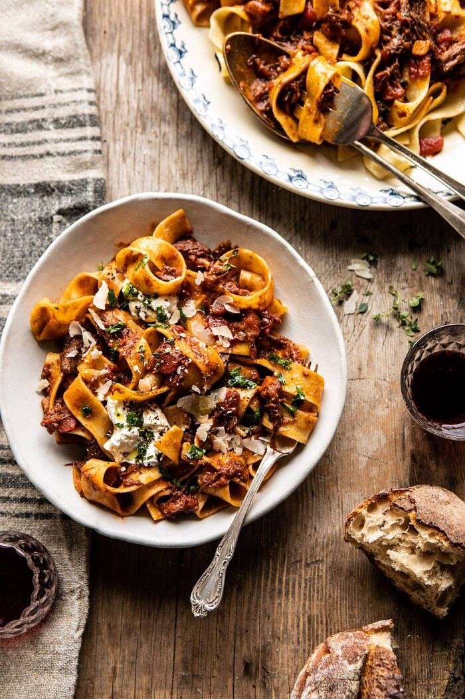

Slow Cooker Red Wine Sunday Ragu Pasta

Description
Slow Cooker Red Wine Sunday Ragù Pasta. Turning a classic cozy
fall/winter recipe into an easy slow cooker pasta using hearty beef
short ribs, red wine, tomatoes, fresh herbs, and pappardelle
pasta…finished off with fresh burrata cheese! This slow-cooked Sunday
dinner is a hearty and delicious meal to come home to at the end of a
busy day. And the best part? It’s an easy dinner to prepare that
everyone loves. You simply can’t go wrong with a dinner like this red
wine Sunday Ragù. Bonus? You can also make this in the Instant Pot or
slow braise in the oven.
Ingredients
- 4-5 pounds bone in beef, short ribs
- kosher salt and black pepper
- 3 slices thick-cut bacon, chopped
- 1 1/4 cups dry red wine, such as Sangiovese
- 1/2 cup low sodium beef broth
- 2 (28 ounce) cans crushed San Marzano tomatoes
- 1 (6 ounce) can tomato paste
- 1 yellow onion, chopped
- 6 cloves garlic, finely crushed or chopped
- 3 ribs celery, finely chopped
- 1 carrot, finely chopped
- 2 sprigs fresh thyme, or 1 tablespoon dried thyme
- 1 tablespoon fresh chopped sage, or 1 teaspoon dried sage
- 1 teaspoon crushed red pepper flakes more or less to taste
- 1 stick (8 tablespoons) salted butter
- 1/2 cup fresh grated parmesan cheese, save the rind
- 1 pound dry pappardelle or tagliatelle pasta
- 8 ounces burrata cheese, at room temperature, for serving
Steps
Slow Cooker
-
Season the short ribs with salt and pepper. Cook the bacon in a
large skillet over medium heat until crisp, about 5 minutes. Remove
the bacon. If there's excess bacon grease, drain off all but 1
tablespoon. Add the short ribs and sear on both sides. Remove the
ribs and transfer to the slow cooker along with the bacon.
-
To the slow cooker, add the parmesan rind, wine, broth, tomatoes,
tomato paste, onion, garlic, celery, carrot, thyme, sage, red pepper
flakes, 4 tablespoons butter, and season with salt and pepper.
Cover and cook on low for 6-8 hours.
-
Once done cooking, remove the short ribs, let cool slightly, then
shred the meat and discard the bones, parmesan rind, and thyme. Add
the shredded meat and parmesan, toss with the sauce. Keep on warm.
-
Bring a large pot of salted water to a boil. Cook the pasta
according to package directions until al dente. Drain and toss the
pasta with 4 tablespoons butter.
-
Divide the pasta between plates, add the ragù, and toss well.
Top each serving with burrata and additional parmesan.
Instant Pot
-
Season the short ribs with salt and pepper. Cook the bacon in a
large skillet over medium heat until crisp, about 5 minutes. Remove
the bacon. If there's excess bacon grease, drain off all but 1
tablespoon. Add the short ribs to the skillet and sear on both
sides. Remove the ribs and transfer to the instant pot along with
the bacon.
-
To the instant pot, add the parmesan rind, wine, broth, tomatoes,
tomato paste, onion, garlic, celery, carrot, thyme, sage, red
pepper flakes, 4 tablespoons butter, and season with salt and
pepper. Cover and cook on high pressure for 40 minutes.
-
Once done cooking, use the natural or quick release function.
Remove the short ribs, let cool slightly, then shred the meat and
discard the bones.
-
Meanwhile, set the Instant pot to sauté. Bring to a boil, boil 5-10
minutes or until the liquid reduces just slightly. Turn the instant
pot off. Remove the thyme and parmesan rind and discard. Add the
shredded meat and parmesan, toss with the sauce. Keep on warm.
-
Finish as directed above for the slow cooker.
Original recipe and article can be found
here
Return to main page